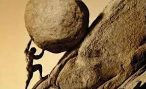

The Myth of Sisyphus - A Reflection

The symbol of Absurdism, Sisyphus.
What is the Myth of Sisyphus?
The Myth of Sisyphus is a collection of philosophical ideas in an essay format written by Albert Camus. It explores the concept of the absurd, which arises from the conflict between the inherent desire to find meaning in life, and the silent, indifferent universe that offers none. This essay is often considered to be a cornerstone of existentialist thought, and it challenges readers to confront the bleak reality of existence and the search for purpose in a world that may never provide it.
Segment 1: Absurdity and Suicide
"There is but one truly serious philosophical problem, and that is suicide." To me, Camus hits the nail on the head here with the start of his essay. Ultimately, this is the most urgent question, whether life is truly worth the effort. Suicide itself is the confession that it (life) is simply not worth the trouble. Is suicide illegitimate, even in the very limits of Nihilism? It's easy to say "Yeah, of course, suicide is never the answer!" But, looking deeper, isn't it the "ultimate" solution? The central idea of this segment is this: What is the exact degree to which suicide is a solution to the absurd?
The typical act of elusion of this idea constitues another theme of the essay: Hope. "Hope of another life one must deserve... for some great idea that will transcend it, refine it, give it a meaning..." This is where the Absurd is introduced, and likewise, born. The real challenge is to stay in this "uncomfortable" area of the Absurd, to examine it closely. This is what seperates the ideas of suicide, hope, and indifference.
Segment 2: Absurd Walls
"Weariness comes at the end of the acts of a mechanical life, but at the same time it inagurates the impulse of consciousness" This segment follows the birth of the Absurd, the "horror" of the realization that you belong to time itself, and the subsequent reaction to this idea. This is where Camus really gets into his bread and butter, and I feel it is the best representation of his central idea throughout the entire essay. We are all familiar with the idea of the "mechanical" life, we have tasks, day in and day out, often the same everyday. We live on the future, the "tomorrows" and the "maybe laters". However, at some point, we recognize that we stand on a certain point in the curve of our lives, and we have no choice but to travel to its end. We always long for tomorrow, and create these ever-moving "checkpoints", but the end of the curve does not move. We are at the hands of time itself. This creates a dilemma, and the beginning of the Absurd realization.
In reality, there is no experience of death. Nothing experiences more than what it lives, and therefore, it is barely possible to speak of the experience of others' deaths. Death is a completely unfamiliar concept to us, which is why it is such a polarizing subject. We have an appetite for clarity, but there is nothing for us to make death more clear. These ideas ought to upset our whole life, but we practice ignorance, not facing these head on. But there is always that feeling that you will never truly know, that you will always be a stranger to yourself at the very end. The only things we truly know are our hearts, and the existance of the world. Everything else remains in contradiction, made from the works of the mind. From the moment this absurdity is recognized, it becomes a passion. It is up to you if you can live with this passion, if you can accept this irrational conclusion. This is where the junction between hope and suicide is born. "The absurd is born of this confrontation between the human need and the unreasonable silence of the world."
Segment 3: Philosophical Suicide
"If I see a man armed only with a sword attack a group of machine guns, I shall consider his act to be absurd. But it is solely by the virtue of the disproportion between his intentions and the reality he will encounter. This contradiction is where the Absurd lies, it is born between the confrontation of ideas. In a larger scale, this confrontation is between ones search for meaning, and the indifferent universe meeting them. While this may sound like a simple idea, of course the universe cannot give us any response, but this is rooted